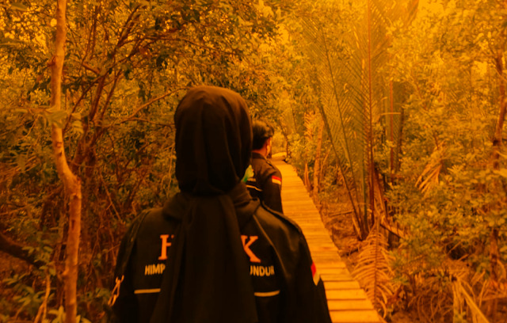

Menyusuri Wisata Mangrove Mengkuse Saat Pandemi
Tanjungbatu- Himpunan Mahasiswa Kundur (HIMK) Tanjungpinang-Bintan telah melaksanakan kegiatan tahunan yaitu kegiatan latihan kepemimpinan (LK) tingkat II Gelombang kedua, kegiatan ini dilaksanakan selama 5 hari.
Latihan kepemimpinan (LK) tingkat II gelombang kedua ini dilaksanakan di Pulau Kundur, Kabupaten Karimun. Kegiatan ini diikuti oleh 10 peserta, yaitu 3 orang laki-laki dan 7 orang perempuan. Tujuan dari latihan kepemimpinan tingkat II ini adalah melakukan pengabdian dan penelitian ke masyarakat untuk mencari permasalahan yang ada di lingkungan masyarakat, kemudian mahasiswa diharapkan untuk dapat mencari solusi dari permasalahan-permasalahan tersebut.
Persiapan dan Pembagian Kelompok
Sebelum berangkat, kami berkumpul di stadion mini sekitar pukul 13:00 WIB. Kami diberikan arahan sekaligus pembagian kelompok oleh Ketua Umum dan Wakil 1 Himpunan Mahasiswa Kundur, yaitu Kakanda Muslim Hamdi dan Kakanda Randika Saputra. Setelah arahan, kami langsung berangkat menuju lokasi yang sudah ditetapkan.
Kami disebar ke tiga lokasi yaitu di Srinanti (Desa Sungai Ungar), Parit Wagio (Desa Sungai Ungar Utara), dan Mengkuse (Desa Sawang Selatan). Saya bersama rekan M. Wahyu Saputra dan Natasya ditempatkan di daerah Mengkuse, Desa Sawang Selatan, Kecamatan Kundur Barat.
Pengalaman di Mengkuse
Kami tiba di Mengkuse sekitar pukul 15:00 WIB, dan langsung menuju rumah Pak RT, RW, dan Pak Dusun untuk memberitahu serta meminta izin bahwa kami akan melaksanakan latihan kepemimpinan tingkat II di daerah setempat. Pak RT, RW, Pak Dusun, dan masyarakat sangat terbuka dan senang dengan kedatangan kami.
Di daerah Mengkuse, banyak masyarakatnya yang bermata pencaharian sebagai petani karet dan kelapa. Selain petani, ada juga yang berprofesi sebagai nelayan karena wilayahnya dekat dengan laut, bahkan sudah terbentuk kelompok nelayan resmi dengan akta notaris.
Wisata Mangrove
Di Mengkuse terdapat wisata hutan mangrove yang menjadi identitas daerah tersebut. Namun, wisata ini belum maksimal karena banyak kendala yang belum terselesaikan, termasuk terputusnya anggaran pembangunan karena kepala desa tersandung kasus. Akibatnya, pembangunan seperti penambahan properti dan pengecoran papan tidak terlaksana.
Dampak Pandemi
Maraknya pandemi COVID-19 membuat objek wisata ini sepi. Minimnya wisatawan lokal maupun dari luar daerah menyebabkan masyarakat yang berjualan di lokasi wisata mengalami penurunan pendapatan ekonomi. Ini seharusnya menjadi perhatian pemerintah desa yang mendukung objek wisata ini untuk membantu ekonomi masyarakat. Perlu inovasi dan daya tarik baru untuk mengembangkan wisata ini, baik secara finansial maupun infrastruktur.
Kendala Infrastruktur
Selain wisata mangrove yang kurang berkembang, kendala penerangan jalan juga masih menjadi masalah di daerah Mengkuse. Jalan yang masuk ke dalam dan banyak perkebunan membuat jalan sepi dan gelap saat malam hari. Pemerintah desa mengusulkan pemasangan lampu biasa di depan rumah masing-masing, namun ini belum dijalankan. Ini menjadi teguran keras untuk pemerintah daerah Kabupaten Karimun mengenai minimnya infrastruktur.
Harapan ke Depan
Dari permasalahan yang ada, diperlukan peran masyarakat, perangkat desa, dan pemerintah daerah, khususnya dinas pariwisata, untuk mengembangkan objek wisata mangrove ini. Dengan harapan, objek wisata tersebut dapat berkembang lebih baik, dan pemuda, masyarakat, pemerintah desa, serta pemerintah Kabupaten Karimun dapat bekerja sama menyelesaikan masalah yang ada, termasuk penerangan jalan yang sampai saat ini belum ada penyelesaian.
Penulis: Nurdiah